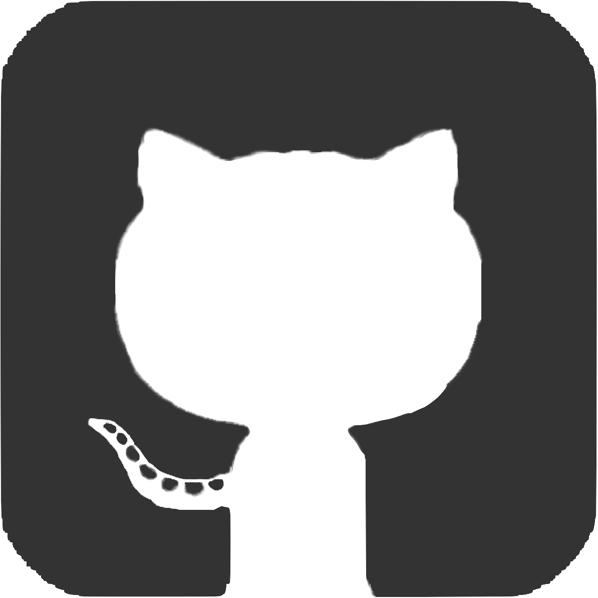

Projects
Codenames AI
In fall '23, I teamed up with 3 other students to create an AI for the game Codenames. We started out by scraping words from Wikipedia, Dictionary.com, and Thesaurus.com to generate TFIDF vectors that were used to gauge the similarity of words. After that, we used Minimax and Randomized-Search algorithms to strategically provide clues to the players. This project was made for our Artificial Intelligence class.
Python

In spring '23, myself, along with 5 other students created a web application that allows users to track their moods and receive songs to complement their moods as well as help track the users' habits. To accompany them on their journey through our application, we also created our Mood Palette mascot, the Moo Pal which users can dress in different outfits. This project was made for our Software Engineering Senior Project class.
MongoDB • Express • React.js • Node.js

LaunchPad Website

As the web development lead of LaunchPad, I led a team of 4 other students to create a website for our organization to help improve visibility and better communicate our purpose to prospective members and sponsors. In addition to delegating tasks and setting deadlines, I also contributed to designing and creating some of the pages.
React

This Website!
To showcase my experiences throughout college, I wanted to create a website to document some of the highlights! Having previously used a template for my website, I took this as an opportunity to not only revamp my website, but dive deep and learn more about HTML and CSS to create the layout that you see here. As for the duck? Just something I like to draw :)
HTML • CSS • JavaScript

In spring '22, myself, along with 5 other students created an android social media application geared towards Purdue Students. It was a platform for Purdue students to post pictures, interact with those pictures, and send private messages to one another. This application was made for our Software Engineering class.
Java • Android Studio • Firebase

Dots and Numbers
Inspired by an Indian newspaper game, my team decided to recreate this game for BoilerMake IX. With little past experience with HTML, CSS, and JavaScript, we initially started out by creating the dots and boxes game and modified it from there.
HTML • CSS • JavaScript

Shell
I created a Shell interpreter that incorporates several features from other popular interpreters like bash and csh for our Systems Programming class. We incorporated features such as wildcarding, line editing, and subshells and used Lex and Yacc to parse through the user's input.
C • C++ • Lex • Yacc

For BoilerMake VIII, my team and I decided to make a Google Chrome extension that allows users to aggregate their shopping carts for various online shopping platforms such as Amazon, Walmart, Ebay, and more. Through our extension, users are also able to conveniently go to the checkout of the stores in addition to viewing their past carts.
HTML • CSS • JavaScript
Song Searcher
In my freshman year of college, as a mentee of LaunchPad, I worked to create a web application that helps users find songs based on different attributes about the song (such as the lyrics, tempo and genre).
React
Class Searcher
As part of my very first hackathon, I worked with three other students in my freshman year to create a tool that would help fellow Purdue students find classes based on their interest. It prompts the user to enter different topics that they like and then sifts through the descriptions of the different classes Purdue has to offer.
Java